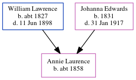

Annie Laurence c1858 -
[ Home ] | [ Calendar ] | [ Surnames Index ] | [ Errors ] | [ Family History ]The child of William Lawrence (a harbour labourer) and Johanna Edwards, Annie Laurence, the great-great-aunt of Nigel Horne, was born in Ramsgate, Kent, England c. 18581,2.
During her life, she was living on Chapel Lane, St Lawrence, Thanet, Kent, England on 7 Apr 18614; and at Rear of Southwood Lodge, St Lawrence in Thanet on 2 Apr 18713.
Parents
- William was born c. 1827
- Johanna Brooker was born in 1831
Citations
- 1861 England Census Online publication - Provo, UT, USA: The Generations Network, Inc., 2005.Original data - Census Returns of England and Wales, 1861. Kew, Surrey, England: The National Archives of the UK (TNA): Public Record Office (PRO), 1861. Data imaged from the National
- 1871 England Census Online publication - Provo, UT, USA: The Generations Network, Inc., 2004.Original data - Census Returns of England and Wales, 1871. Kew, Surrey, England: The National Archives of the UK (TNA): Public Record Office (PRO), 1871. Data imaged from the National
- 1871 England, Wales & Scotland Census - Findmypast (was age 13 and the daughter of the head of the household)
- 1861 England, Wales & Scotland Census - Findmypast (was age 3 and the daughter of the head of the household)
Media
1861 England, Wales & Scotland Census - GBC-1861-0003546443
Family Tree
Map
Generated by ged2site. Last updated on Jul 3, 2024
Known Issues
Surname is different from both parents